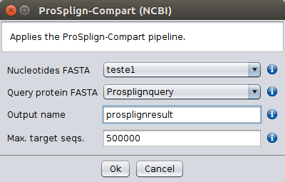

An alternative to Splign-Compart (NCBI) is ProSplign-Compart (NCBI). When using this option, protein reference sequences rather than CDSs (nucleotide) reference sequences are used. Since protein sequences change at a slower pace than nucleotide sequences, in principle the reference and target sequences can be more distantly related than when using the Splign-Compart (NCBI) option, but it is difficult to quantify how distantly related they can be. Moreover, Splign-Compart (NCBI) runs considerably faster than ProSplign-Compart (NCBI).
When using the ProSplign-Compart (NCBI) option the user must specify the FASTA file containing the genome to be annotated (Genome Fasta), as well as the file containing the reference protein sequences (Query protein FASTA), and the name of the output file (Output name). The main results file is saved in the /fasta/nucleotides folder that is located in the specified repository folder. The first number on the header is an index that is followed by the name of the protein sequence used to obtain the annotation. The remaining information gives the possibility to link this file to two other files that will be saved in the /Export Files/nucleotides folder that is located in the specified repository folder (see below), and information on the name of the sequence that was annotated (see text after Header:). In the /Export Files/nucleotides folder, the file with the txt extension shows the output of the tblastx search used for the subsequent annotation, while the file with the fasta extension gives the genome region where the gene has been annotated, including the name of the target nucleotide sequence (see text after Header:). The correspondence between the two files is made by looking at the first four numbers in the file with the Fasta extension that must match the first, second, fourth and fifth number, respectively, in the file with the txt extension. It should be noted that a single reference sequence can give rise to more than one annotation if ProSplign cannot completely confidently align the reference and target sequences (those positions that are confidently aligned are labelled with an asterisk in the file with the txt extension).
The resulting CDS annotation is based on the homology to a given protein reference sequence, and thus may produce sequence annotations with lengths that are not multiple of three, if for instance, sequencing errors causing frameshifts are present in the genome to be annotated. Nevertheless, the existence of intron splicing signals at the exons 5’ and 3’ ends is taken into account. There will be no stop codon in the CDS annotation since the reference sequence is a protein.

ProSplign-Compart (NCBI)